DCTO8D 2009 : Emulateur TO8D Thomson
DCTO8D 2009 est un émulateur de TO8D Thomson créé par Daniel Coulom (mail to danielcoulom at gmail point com).
Le site web de DCTO8D est dcto8.free.fr.
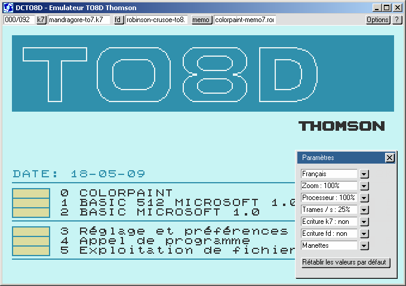
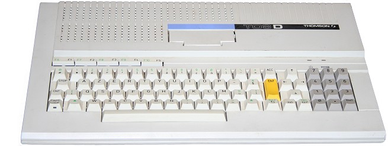
Photo © 2007 - Daniel Coulom
Fonctions
DCTO8D 2009 émule :
L'interface utilisateur est bilingue : anglais et francais.
Informations techniques
DCTO8D 2009 est un logiciel libre.
- Il est distribué sous licence GPL (voir la licence officielle)
- Il est programmé en langage C
- Il utilise la bibliothèque SDL pour la video et l'audio.
- L'interface utilisateur a été développée spécialement pour ce projet.
- Il n'utilise pas de fonction spécifique à une machine ou à un système d'exploitation, pour rester portable.
- Il est compatible avec Windows, Linux, Mac-OS et beaucoup d'autres systèmes.
Historique
- 2009-05-20 : Diffusion de DCTO8D 2009.05
- 2006-12-10 : Diffusion de DCTO8D v10
Installation
DCTO8D 2009 fonctionne sur tous les PC à partir du Pentium II, avec une carte son, une carte video récente.
Le système d'exploitation peut être Linux ou Windows ou tout autre système compatible avec SDL.
DCTO8D 2009 fonctionne aussi sur d'autres machines et d'autres systèmes.
La liste sera donnée ici en fonction des témoignages d'utilisateurs.
 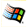
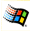
Tous systèmes
- Créez un nouveau dossier et nommez-le dcto8d (ou tout autre nom à votre convenance).
- Dans ce dossier chargez l'archive dcto8d.2009.05.zip
- Décompactez l'archive en conservant la structure des répertoires.
- Dans un sous-dossier de votre choix placez les images de cassettes, disquettes ou cartouches du site dcmoto.
Linux
- Installez la bibliothèque SDL
- Compilez DCTO8D 2009
- Exécutez le programme compilé
Windows
- Les fichiers dcto8d.exe et SDL.dll sont fournis. Il suffit d'un double clic sur dcto8d.exe.
- Il est conseillé de créer un raccourci et de le placer sur le bureau ou dans la barre des tâches.
Autres systèmes
Utilisation
Commandes de l'émulateur
Toutes les commandes de l'émulateur sont effectuées à partir de la barre de menu située en haut de la fenêtre principale.
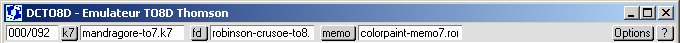
- A propos de DCTO8D
Cliquez sur le bouton [?] à droite de la barre de menu.
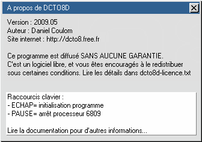
- Paramètres
Cliquez sur le bouton [Options] à droite de la barre de menu, et sélectionnez la ligne Paramètres...
Les boutons à droite de chaque ligne permettent de sélectionner la valeur désirée.
Le boutons [Rétablir les valeurs par défaut] réinitialise toutes les valeurs.
Notez que la nombre de trames par seconde a un impact important sur les ressources utilisées.
Avec une machine lente, si le rendu audio est mauvais, il faut diminuer ce nombre jusqu'à obtenir un son correct.
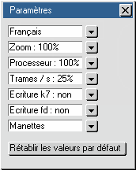
- Configuration du clavier
Cliquez sur le bouton [Options] à droite de la barre de menu, et sélectionnez la ligne Clavier...
Les codes des touches dépendent du type de clavier et du système d'exploitation.
Il est impossible de prévoir toutes les configurations.
Par défaut dcto9p utilise un clavier standard francais dans Windows XP ou Linux. Pour les autres configurations il faut redéfinir la disposition.
Le principe est simple : à chaque touche physique du TO8D correspond une touche physique de la machine utilisée.
Mode opératoire : tapez une touche sur votre clavier. La touche correspondante du TO8D est affichée. Si elle n'est pas
correcte, cliquez sur l'image de la touche TO8D souhaitée. Répétez l'opération pour les 84 touches du TO8D.
Ensuite vous pouvez sauver votre disposition personnalisée, elle sera ainsi utilisée au prochain lancement de DCTO8D.
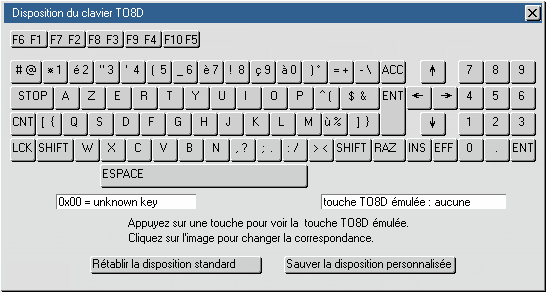
- Configuration des manettes
Cliquez sur le bouton [Options] à droite de la barre de menu, et sélectionnez la ligne Manettes...
Les manettes sont émulées par le clavier (utilisez de préférence le pavé numérique).
Pour chacune des deux manettes il faut définir quatre touches de direction et une touche d'action.
Le principe est exactement le même que pour le clavier. Notez que la même touche peut être utilisée à la fois pour émuler les manettes et le clavier.
A vous de faire les choix judicieux pour ne pas perturber le fonctionnement du programme exécuté lors de l'utilisation des manettes.
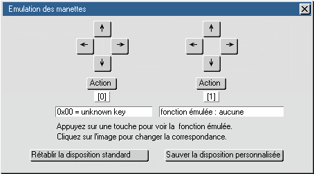
- Chargement de cassette, disquette ou cartouche MEMO7
Cliquez sur le bouton [k7], ou [fd], ou [memo] de la barre supérieure.
Une liste de dossiers et de fichiers est affichée dans un menu.
Vous pouvez cliquer sur la ligne [décharger] pour enlever le logiciel actuellement chargé,
et sur [suite...] ou [retour au début...] si ces lignes sont affichées.
Vous pouvez naviguer dans les dossiers en cliquant sur une ligne précédée du symbole dossier.
Vous pouvez enfin cliquer sur un nom de fichier pour charger une image de cassette, disquette ou cartouche.
A vous de vérifier que le fichier est au bon format et compatible avec le TO8D.
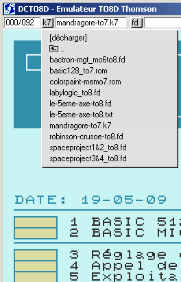
 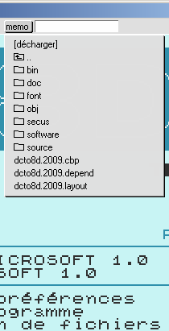
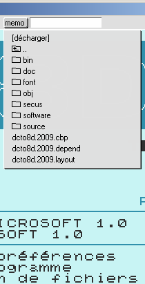
Commandes du TO8D
Consultez le Guide du TO8D, à la page Documentation du site dcmoto
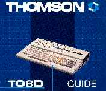
Commandes des logiciels
Téléchargez la documentation spécifique, à la page Programmes du site dcmoto
{kind=link}
{kind=link}
{kind=link}
{kind=link}
{kind=link}